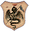

|

Non sappiamo con precisione come fosse composta la Comparsa di questo Palio. Nei fogli prestampati, che dovevano compilare le Contrade, il Duce veniva chiamato Capitano e il Tenente colui che oggi sarebbe il Paggio Maggiore.
Partecipavano al corteo solo i figuranti delle Contrade che correvano.

 AQUILA AQUILA
Duce - Ciabattini Adamo (impiegato), via Duprè 46
Tenente - n.r.
 CHIOCCIOLA CHIOCCIOLA
Duce - Casini Francesco, via S.Marco 15
Tenente - n.r.
 CIVETTA CIVETTA
Duce - Cherici Francesco, via Duprè 19
Tenente - n.r.
 DRAGO
Duce - Giomi Giacomo
Tenente - n.r.
 GIRAFFA GIRAFFA
Duce - Partini Bernardino, via delle Vergini 20
Tenente - n.r.
 NICCHIO NICCHIO
Duce - Giachetti Giovanni, fuori Porta Fontebranda
Tenente - n.r.
 OCA OCA
Duce - Tancredi Pietro, via Benicasa 35
Tenente - n.r.
 SELVA SELVA
Duce - Picchiai Torello, via Franciosa 29
Tenente - n.r.
 TORRE TORRE
Duce - Burroni Pietro, via Salicotto 24
Tenente - n.r.
 VALDIMONTONE VALDIMONTONE
|